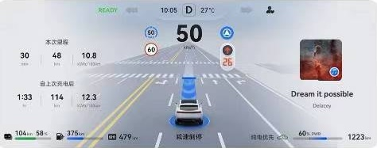
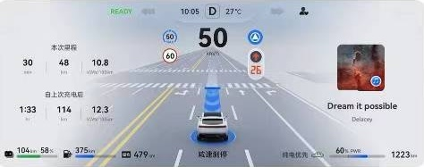

Project Overview
This project focuses on UX research for the Huawei Car, aiming at developing proper degree of trust while using advanced driving assistance (L2+ level) by designing optimized communication in car.
Study 1
Objective
To understand user needs for types of information and their emotion at different phases of different use cases while using ADAS (high frequency, important use scenarios).
Methodology
We conducted user contextual inquiry/interviews and surveys to gather insights and provide a base for design elements.
Results
The research resulted in a set of design recommendations that improved the overall user experience.
Study 2
Objective
To test our developed UI version and understand feelings and thoughts of users who are in different profile groups.
Methodology
A/B testing was used for our aims.
Results
Better UX has been confirmed in comparison with the benchmark version. A set of design recommendations was also delivered.
Gallery
 
